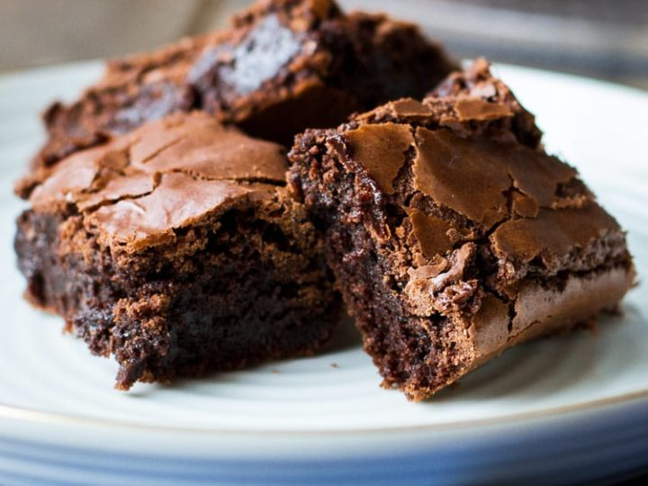

Brownies

Ingredients:
- 1/2 cup butter
- 1 cup white sugar
- 2 eggs
- 1 tsp vanilla extract
- 1/3 cup unsweetened cocoa powder
- 1/2 cup all purpose flour
- 1/4 tsp salt
- 1/4 tsp baking powder
Frosting Ingredients:
- 3 tbsp softened butter
- 3 tbsp unsweetened cocoa powder
- 1 tbsp honey
- 1 tsp vanilla extract
- 1 cup confetioners' sugar
Instructions:
- Preheat oven at 350 degrees. Grease and flour an 8 inch square pan.
- Melt 1/2 cup butter in a large saucepan over medium heat (do not burn).
- Remove from heat, and stir in sugar, eggs, and 1 teaspoon vanilla.
- Beat in 1/3 cup cocoa, flour, salt, and baking powder.
- Spread batter into prepared pan.
- Bake in the preheated oven until top is dry and edges have started to pull away from the sides of the pan, about 25 to 30 minutes.
- Let cool briefly before frosting.
Frosting:
- Combine softened butter, confectioners' sugar, 3 tablespoons cocoa, honey, and 1 teaspoon vanilla extract in a bowl.
- Stir until smooth.
- Frost brownies while they are still warm.
- Enjoy